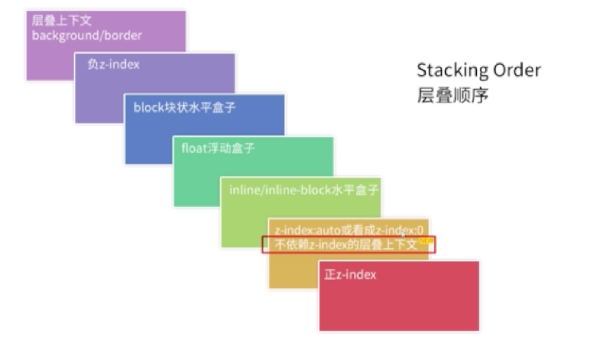

z-index基本规则
- 如果定位元素
z-index没有发生嵌套（就是说一个定位元素的子元素的position都是static）,那么此时遵守的规则为：
- 后来居上的准则
- 哪个大，哪个上
- 如果定位元素发生了嵌套
- 祖先优先原则（z-index的值非
auto） - 如果
z-index: auto,那么就不遵守祖先优先的原则了
- 祖先优先原则（z-index的值非
|
|
上面的例子，虽然第一个图片的
z-index:2，第二个图片的z-index: 1，但是由于发生了嵌套，祖先元素都是z-index: 1，所以第二个图片覆盖在第一个图片上面。
|
|
上面的例子，同第一个例子一样，唯一不同的地方就是第一个图片祖先元素的
z-index:auto, 那么此时第一个图片在覆盖第二个图片。
解释：z-index: auto当前层叠上下文生成的盒子层叠水平是0。盒子（除非是根元素）不会创建一个新的层叠上下文。
z-index中涉及到的重要概念
- 层叠上下文（stacking context）：html中元素在z轴上的堆叠顺序。
- 页面根元素（可以理解为html或者为body）天生具有层叠上下文，称之为”根层叠上下文“。
- z-index为数值的定位元素具有层叠上下文。
- 一些其他属性的元素
- 层叠水平（stacking level）：层叠上下文中的每个元素都有一个层叠水平，层叠水平决定了同一个层叠上下文中的元素在z轴上的堆叠顺序。
- 层叠顺序（stacking order）：元素发生层叠时有着特定的垂直显示顺序。
层叠上下文的几个特性
- 层叠上下文可以嵌套，组合成一个分层次的层叠上下文。
- 每个层叠上下文和兄弟元素独立：当进行层叠变化或者渲染的时候，只需要考虑后代元素。
- 每个层叠上下文是自成体系的：当元素的内容被层叠后，整个元素被认为是在父层的层叠顺序中。
7阶层叠水平(stacking level)

为什么层叠顺序是这样的？
可以这样理解：
background,border等主要用来装饰元素，block盒子float元素主要用来布局，而inline, inline-block主要用来展示内容，而内容是页面中最重要的实体，所以应该让其层叠水平更高。
|
|
上面的例子:
inline-block的元素会覆盖在block元素的上面，但是block元素中的文字并没有被覆盖。因为文字是属于inline元素，对照7阶层叠上下文可以知道inline的堆叠顺序和inline-block是一个等级的，并且block元素出现在inline-block元素的后面，按照后来居上的规则，inline-block元素并不会覆盖block元素中的文字。
z-index元层叠上下文的关系
- 定位元素默认
z-index:auto可以看成是z-index: 0。 z-index不为auto的定位元素创建层叠上下文。z-index层叠顺序的比较止步于父级层叠上下文。
|
|
上面的例子，如果
box不加上z-index:0,那么此时的层叠上下文就是body元素，那么z-index:-1的元素会处于body元素的下面，所以box元素覆盖图片。
但是如果box元素加上z-index:0, 那么此次层叠上下文就变成了box元素，那么按照7阶层叠水平,background是处于最底层的，所以z-index:-1的图片会覆盖背景。
|
|
上面的例子，虽然
box1中的img图片的z-index:99999很大，但是其父元素的z-index: 0没有第二个图片的父元素box2的z-index:1大，所以依然是第二个图片覆盖第一个图片。
其他参与层叠上下文的属性
z-index值不为auto的flex项（父元素display:flex|inline-flex）123456789101112131415161718// 设置为flex的父元素，可以改变子元素z-index不为auto的元素参数参与堆叠上下文.box{/*display: flex;*/background-color: blue;}.box > div {z-index: 1;}.box > div > img{position: relative;z-index: -1;}<div class="box"><div><img class="img" src="https://ss0.bdstatic.com/5aV1bjqh_Q23odCf/static/superman/img/logo/bd_logo1_31bdc765.png" alt=""></div></div>
当没有为
box设置display: flex时，此时层叠上下文为根元素（html或者body），所以img设置为z-index:-1会堆叠在根元素下面，也就是背景会覆盖图片。但如果设置box为display: flex,那么此时display:flex的子元素z-index不为auto的元素参与堆叠顺序，那么按照7阶堆叠顺序，z-index为负值的会堆叠在background上面。
opacity != 1123456789101112.box{background-color: blue;/*opacity: .9;*/}.box > img{position: relative;z-index: -1;}<div class="box"><img class="img" src="https://ss0.bdstatic.com/5aV1bjqh_Q23odCf/static/superman/img/logo/bd_logo1_31bdc765.png" alt=""></div>
当没有给
box元素设置opacity:.9时，那么此时box为非层叠上下文元素，那么img会层叠到根层叠上下文元素的下面，所以box会覆盖img。一旦设置了box的opacity: .9是，此时层叠上下文为box元素，那么按照7阶堆叠顺序, 负的z-index会覆盖在background的上面。
- 剩下的
transform != none,mix-blend-mode != normal,filter != none,isolation: isolation,position: fixed,will-change: 任意支持过渡的元素,-webkit-overflow-scrolling: touch同理。
非定位元素层叠上下文和z-index的关系
- 不依赖
z-index的层叠上下文元素的层叠顺序均是z-index:auto级别。（可以查看上面的”其他属性创建层叠上下文的图“, 需要注意的是flex, 他是依赖z-index的） - 依赖
z-index的层叠上下文元素的层叠顺序取决于z-index的值。123456789101112131415161718.a{position: absolute;z-index: 1;top: 10px;left: 40px;}.box{display: flex; /*普通元素*/background-color: blue;}.box > img{z-index: 1; /*flex项是层叠上下文元素*/}<img class="a" class="img" src="https://ss0.bdstatic.com/5aV1bjqh_Q23odCf/static/superman/img/logo/bd_logo1_31bdc765.png" alt=""><div class="box"><img class="img" src="https://ss0.bdstatic.com/5aV1bjqh_Q23odCf/static/superman/img/logo/bd_logo1_31bdc765.png" alt=""></div>
Every interaction is both precious and an opportunity to delight.